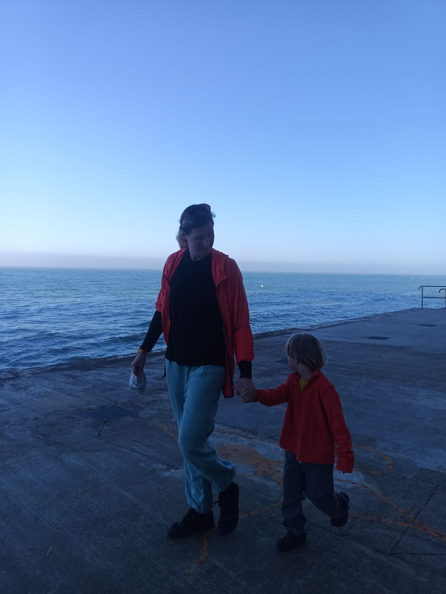

I am a computational researcher studying how AI and platform systems shape the lives of children, in classrooms, at home, in games, and in their interactions with increasingly capable AI tools. Increasingly I don't only study these questions but build working prototypes that answer them.
Before computational research I taught mathematics to refugee and immigrant students in New York City and held research positions at the World Bank, UNESCO IIEP, OECD, and the Global Partnership for Education. I hold a PhD in lifelong learning from Penn State, and masters and bachelors in math from Columbia Teachers College and Duke. Outside work: I swim competitively, bike across countries, and dig in the dirt with my two bilingual boys.